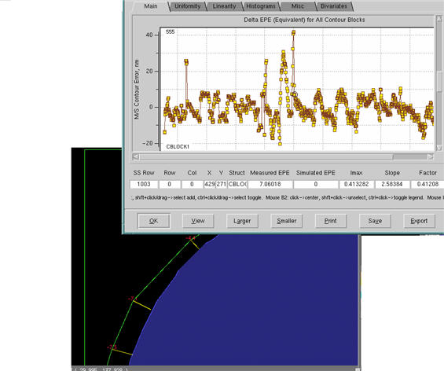

If you used the
Calibre ContourCal tool as part of your model development, contour
fitness information was added to your layout. You can view EPE points in
the layout by following this procedure.
Information on Calibre ContourCal can be found
in the appendix “Importing Contour Calibration Files”.
Prerequisites
You
must have successfully completed a modelflow (VT5 Center GUI or
batch) run with contour information enabled (in the CLI tab)
and with a non-zero weight value.
You
must have the design file that contains the contour data loaded
in Calibre WORKbench.
Procedure
- If a VT5 Center run has just
completed and the log file is listed, you can select it to highlight
it. Otherwise, click the Open button to select
a log file for analysis, then select the log line in the list.
- Click the Plot button,
which brings up the SSS Process Window Analysis window.
- Select a process condition
and click Analyze to view multiple plots
showing measured versus actual dimensions for all data points.
- In the Analyze Model window, Main tab, select
one or more EPE points of interest from the Delta EPE Equivalent
for All Contour Blocks graph, then click View.
You may have to scroll the Main tab down
to view the graph.
- To traverse between multiple
selected EPE points, click View multiple
times.
Figure 1. Calibre ContourCal
Points Selection From VT5 Center